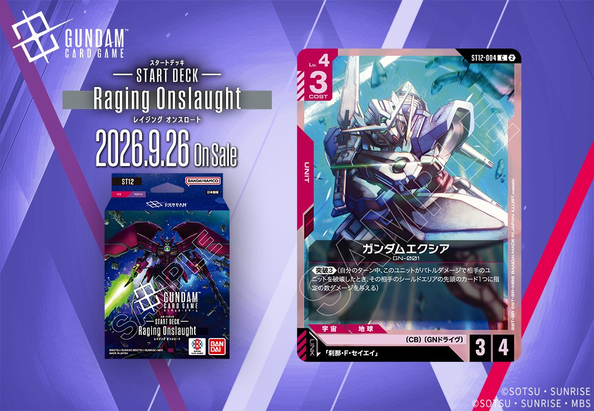
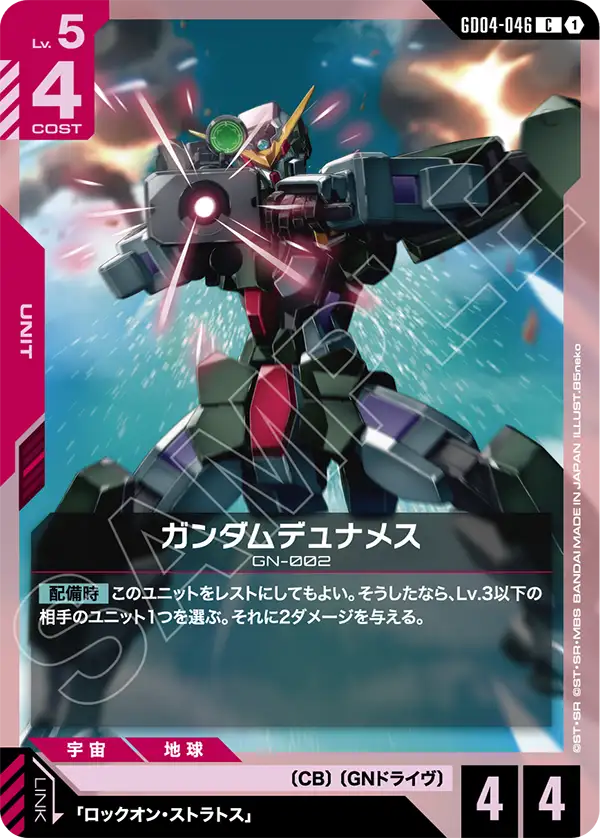

今回は2種のCOMMANDおよびUNITを取り上げます。Stardust Trailsからは青のCOMMAND「奇跡」(GD06-102、2026-10-31発売)、ST12からは赤のUNIT「ガンダムエクシア」(ST12-004、2026-09-26発売)が登場し、後者は「刹那・F・セイエイ」とのリンクを持ちます。
奇跡 (GD06-102)
| 色 | 青 | タイプ | COMMAND |
| Lv | 3 | コスト | 3 |
効果: 【バースト】このカードを手札に加える。【アクション】相手のターンで、このターン中、相手のユニットがアタックしていないなら、自分は2枚ドローする。
奇跡（GD06-102）はCOST3のコマンドで、【バースト】でこのカードを手札に加え、【アクション】では相手のターン中に相手のユニットがアタックしていない場合、2枚ドローできる。相手の攻撃を抑制した状況でアドバンテージに変換できる点が特徴で、同色で採用率上位の覚悟の表れ（GD01-100）と合わせればドロー手段を厚くできる。 発売は2026-10-31、リンクは設定されていない。

ガンダムエクシア (ST12-004)
| 色 | 赤 | タイプ | UNIT |
| Lv | 4 | コスト | 3 |
| AP | 3 | HP | 4 |
| 特徴 | 〔CB〕、〔GNドライヴ〕 | ||
| リンク条件 | 「刹那・F・セイエイ」 | ||
効果: 《突破3》(自分のターン中、このユニットがバトルダメージで相手のユニットを破壊したとき、その相手のシールドエリアの先頭のカード1つに指定の数ダメージを与える)
ガンダムエクシア(ST12-004)はCOST3でAP3/HP4と赤ユニットとして標準的なステータスを持ち、《突破3》によりバトルダメージで相手ユニットを破壊した際、シールドエリア先頭に3ダメージを追加で通せる点が特徴です。リンク先の「刹那・F・セイエイ」を搭載することでリンクを成立させられ、盤面制圧とシールド削りを両立できます。2026年9月26日発売のST12収録カードです。

関連カード
-
 アムロ・レイ(ST01-010)青系デッキ内採用率53.9% (2572デッキ)
アムロ・レイ(ST01-010)青系デッキ内採用率53.9% (2572デッキ) -
 ガンダム(ST01-001)青系デッキ内採用率52.3% (2497デッキ)
ガンダム(ST01-001)青系デッキ内採用率52.3% (2497デッキ) -
 覚悟の表れ(GD01-100)青系デッキ内採用率51.1% (2439デッキ)
覚悟の表れ(GD01-100)青系デッキ内採用率51.1% (2439デッキ) -
 コルシカ基地(ST02-016)青系デッキ内採用率38.4% (1834デッキ)
コルシカ基地(ST02-016)青系デッキ内採用率38.4% (1834デッキ) -
 ガンタンク(GD01-008)青系デッキ内採用率38% (1813デッキ)
ガンタンク(GD01-008)青系デッキ内採用率38% (1813デッキ) -
 ガンダムエクシア(GD04-038)赤系デッキ内採用率3.4% (163デッキ)
ガンダムエクシア(GD04-038)赤系デッキ内採用率3.4% (163デッキ) -
 ガンダムキュリオス(GD04-034)赤系デッキ内採用率0.7% (35デッキ)
ガンダムキュリオス(GD04-034)赤系デッキ内採用率0.7% (35デッキ) -
 ハレルヤ・ハプティズム(GD04-090)赤系デッキ内採用率0.7% (35デッキ)
ハレルヤ・ハプティズム(GD04-090)赤系デッキ内採用率0.7% (35デッキ) -

ガンダムデュナメス(GD04-046)赤系デッキ内採用率0.6% (27デッキ) -
 ガンダムスローネアイン(GD04-036)赤系デッキ内採用率0.6% (27デッキ)
ガンダムスローネアイン(GD04-036)赤系デッキ内採用率0.6% (27デッキ)